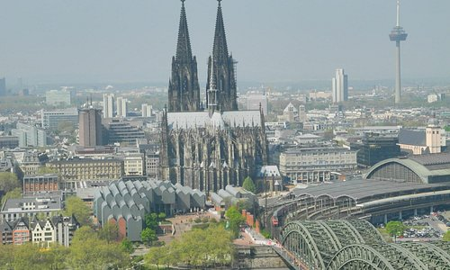

Koln

Cologne (English: /kəˈloʊn/ (listen) kə-LOHN; German: Köln [kœln] (listen); Kölsch: Kölle [ˈkœlə] (listen)) is the largest city of the German western state of North Rhine-Westphalia (NRW)
and the fourth-most populous city of Germany with 1.1 million inhabitants in the city proper and 3.6 million people in the urban region.
Centered on the left (west) bank of the Rhine, Cologne is about 35 km (22 mi) southeast of NRW's state capital Düsseldorf and 25 km (16 mi) northwest of Bonn.